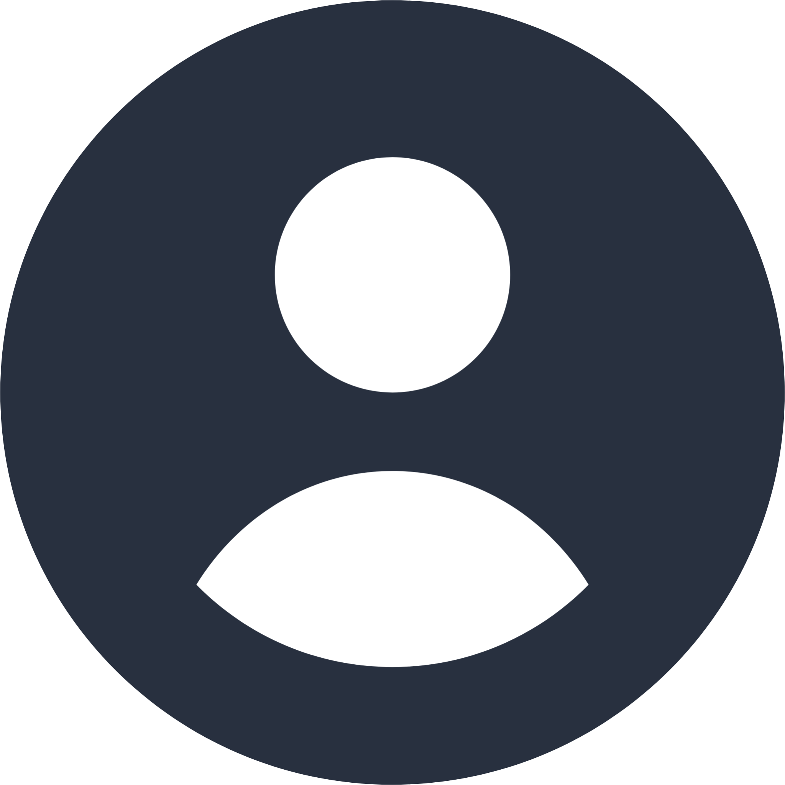

Fundadores do Tesorly

Sarah Gabriela


Rogério Gonçalves

Pare de perder tempo! Faça parte do Tesorly e torne-se mais produtivo.

Um site de agendamento para salão de beleza que permite que clientes marquem horários de forma rápida e prática, escolhendo serviços e profissionais disponíveis sem precisar de contato direto.
A plataforma também oferece um catálogo de serviços e produtos, onde o profissional pode apresentar preços, descrições e opções disponíveis para seus clientes.
O sistema contribui para a organização do trabalho do profissional, reunindo agenda, divulgação e vendas em um único ambiente digital.

Experiências de Uso
Veja a opinião de pessoas que testaram e usaram nossa plataforma no dia a dia.

Poliana Silva
Cliente
Usei o site para agendar um horário no salão e achei tudo muito prático. Consegui escolher o serviço, ver os horários disponíveis e marcar em poucos minutos, sem complicação. Com certeza usaria novamente.
Fabiano Ferraz
Cliente
Como cliente, achei muito útil poder ver os serviços e preços antes de marcar. Isso passa mais confiança e ajuda na escolha do que realmente quero fazer.
Tereza Santes
Cliente
O sistema de catálogo também é um ponto positivo, já que permite apresentar os serviços de maneira clara, ajudando o cliente a entender melhor o que está sendo oferecido.
Ricardo Tomaz
Cliente
Gostei muito da experiência como cliente. O catálogo de serviços é bem organizado e ajuda bastante na hora de decidir o que fazer. Tudo é claro e fácil de navegar.
Mariana Teles
Profissional
Sou profissional da área e vejo esse tipo de sistema como algo essencial hoje em dia. Ter agenda, serviços e divulgação em um só lugar facilita muito a rotina e melhora o atendimento ao cliente.
Sônia Tavares
Profissional
Do ponto de vista profissional, é uma solução que traz mais praticidade no dia a dia e melhora a forma como os serviços podem ser apresentados ao público.
Roberto Pereira
Profissional
O site ajudou na organização da minha agenda e facilitou o controle dos horários e serviços, deixando tudo mais prático no dia a dia.